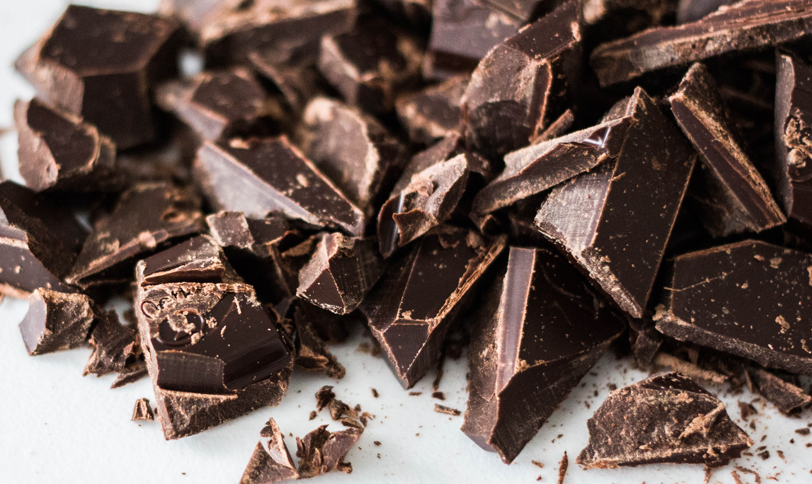
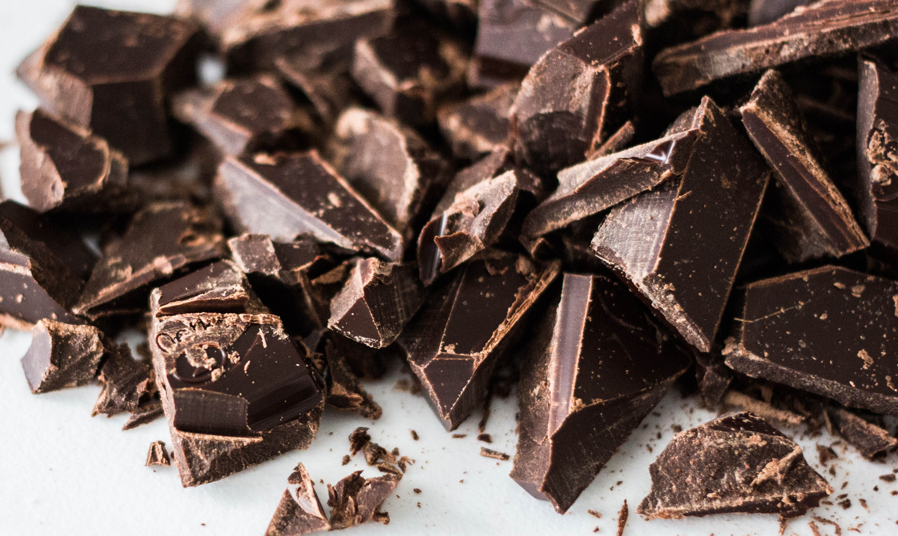

Chocolate has a poor reputation due to its high fat and sugar content. However, according to a review Trusted Source of chocolate’s health effects published in the Netherlands Journal of Medicine, it’s not all shocking news.
People in general crave chocolate because it tastes good, it smells good, and it feels awesome when it melts in our mouths.
Eating chocolate may have the following benefits:
According to the Organization called "Her Heart". It is important to note that the possible health benefits mentioned below came from single studies. More research is needed to confirm that eating chocolate can really improve people’s health.
Dark chocolate has low sugar levels, so unnaturally tastes slightly bitter. Light chocolate is much sweeter. It contains cocoa solids that are diluted with milk, cream, amd sugar. This mix of ingredients makes it smoother and creamier than dark chocolate.
Here are some sample nutrient levels in light and dark chocolate
The darker the chocolate, the higher the concentration of cocoa, and so, in theory, the higher the level of antioxidants there will be in the bar.